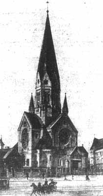
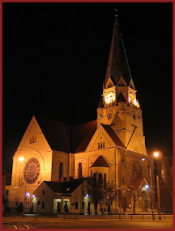
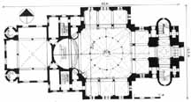
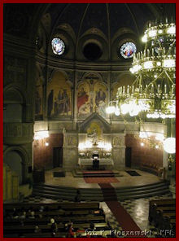
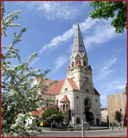
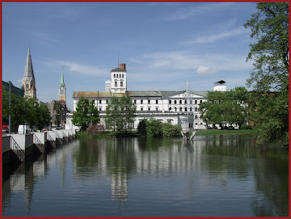

The following are pictures from the Lodz - St. Matthew Parish.
The German Lutheran cemetery in Lodz served all three parishes. For some pictures of the cemetery, refer to our Lodz Trinity Lutheran photo page. Trinity was the closest church to the cemetery.
Historical pictures were obtained from a Polish website, now defunct, that detailed the historical archictecture and construction of the building. They are used with permission of the original site creator.
|  | This picture and the floor plan below were obtained from a Polish language website, now defunct, that detailed the historical architecture and construction of the building. They are used with permision of the author. Unfortunately the description and translation were not copied prior to the demise of the web page. |  | St. Matthew Lutheran Church as it appears today. While the two representations are very similar, there are some differences that are difficult to explain. - photo courtesy of WIKI (public domain) |
|  |  | Interior of St. Matthew Lutheran Church. - photo courtesy of WIKI (public domain) |
|
|  | This church is the only one in Lodz still functioning as Lutheran in 2012. - photo courtesy of Jerry Frank |
 | |
| The White Factory was a major cloth making facility in Lodz owned by German industrialists and employing numerous German people in the region. St. Matthew Lutheran is the first church on the left. A Catholic church is located further up the street. - photo courtesy of Jerry Frank |
|||
{kind=link}
{kind=link}
{kind=link}
{kind=link}
{kind=link}
{kind=link}